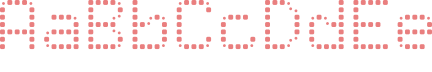
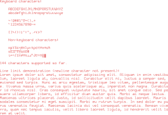
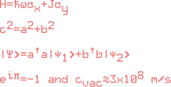

Texts
There are two ways to generate text in device layouts. The first way is to generate polygons that look like fonts, which will ensure that the text can be fabricated. This is handled by functionality in the PolyText module.
The second way is to generate "text elements," which are more like annotations to save metadata into layout files. This is implemented in the Texts module. These are saved to GDS as TEXT records, which may be displayed differently by different GDS viewers. Graphical export of text elements may also be system-dependent, so if you want a fixed geometry, you should use PolyText.
See API Reference: Texts.
PolyText
DeviceLayout.jl provides a few styles for rendering text as polygons. polytext! will render a string to a cell with options that depend on the style. The DotMatrix style provides more options than the styles derived from fonts, which only take a character width and Meta type.
Three functions characters_demo, scripted_demo, referenced_characters_demo are exported for demonstration but they also serve as a test of the functionality.
The fonts are generated by first converting characters from a TrueType font to a GDS file. This is done with the help of external layout tools. These characters are mono-spaced in 100µm x 200µm boxes, with cuts made to connect any interior islands within the characters to the outside. Following this, DeviceLayout.PolyText.format_gds is used to chop up the file into one character per Cell and then save the result for use by DeviceLayout.jl. All of these files are stored in deps/. To define a new font you need to make a new subtype and implement a few methods following the example in src/polytext/polytext.jl.
import DeviceLayout.Graphics: inch
cs = CoordinateSystem("cs", nm)
polytext!(cs, "AaBbCcDdEe", DotMatrix(; pixelsize=20μm, rounding=6μm))
save("dotmatrix_rounded_nosep.svg", Cell(cs, nm), width=6inch, height=1inch);cs = CoordinateSystem("cs", nm)
polytext!(cs, "AaBbCcDdEe", DotMatrix(; pixelsize=20μm, pixelspacing=30μm, rounding=6μm))
save("dotmatrix_rounded.svg", Cell(cs, nm), width=6inch, height=1inch);
cs = CoordinateSystem("cs", nm)
polytext!(cs, "AaBbCcDdEe", DotMatrix(; pixelsize=20μm, meta=GDSMeta(1)))
save("dotmatrix.svg", Cell(cs, nm), width=6inch, height=1inch);cs = CoordinateSystem("cs", nm)
polytext!(cs, "AaBbCcDdEe", PolyTextSansMono(20μm, GDSMeta(0)))
save("sansmono.svg", Cell(cs, nm), width=6inch, height=1inch);cs = CoordinateSystem("cs", nm)
polytext!(cs, "AaBbCcDdEe", PolyTextComic(20μm, GDSMeta(0)))
save("comic.svg", Cell(cs, nm), width=6inch, height=1inch);Inline demonstrations
characters_demo(path_to_output_gds, true);
scripted_demo(path_to_output_gds, true);